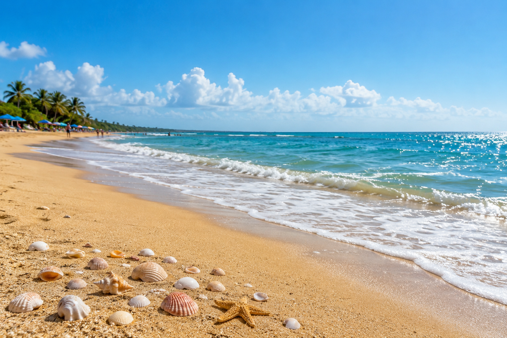
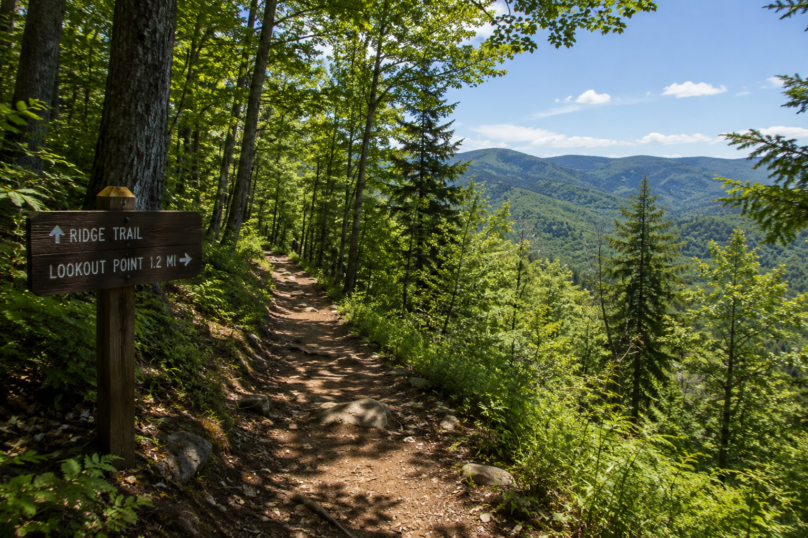
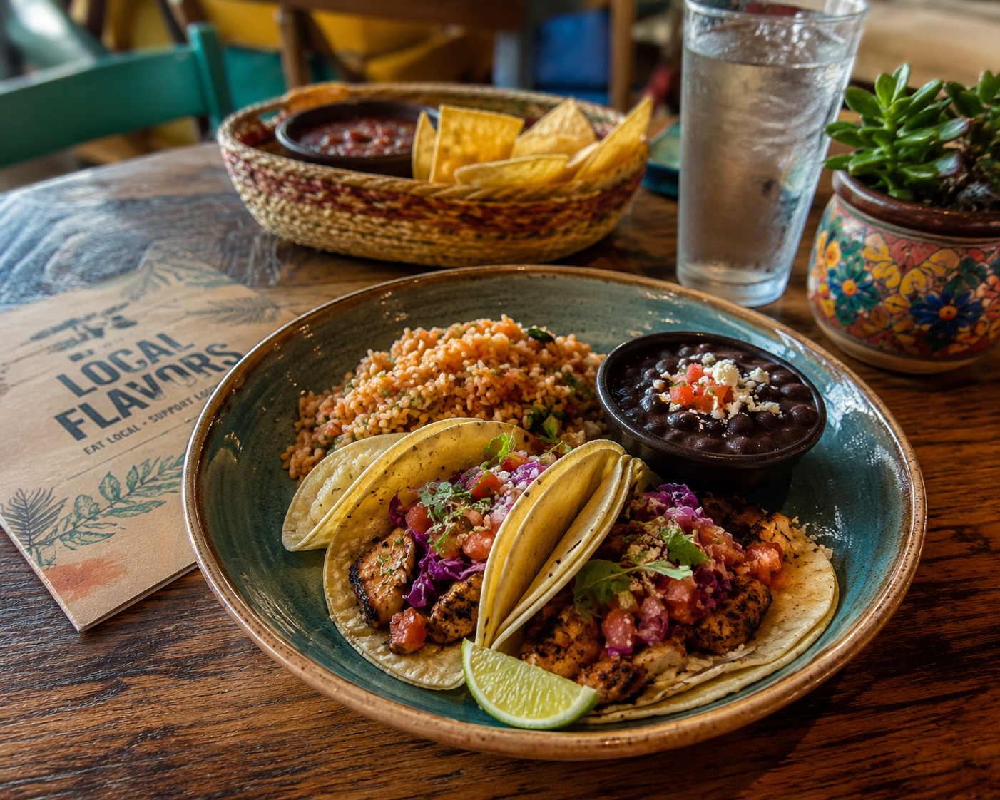

This summer, I spent a relaxing day at the beach with my family.
The weather was warm, and the sound of the waves made the day peaceful.
We walked along the shore, collected shells, and enjoyed the sunshine.
It was a great way to start my summer vacation.

A relaxing day at the beach.
Hiking in the Woods
Another part of my summer vacation was going hiking on a wooded trail.
The trail had tall trees, birds singing, and fresh air all around.
I enjoyed being outside and taking a break from screens and technology.
The hike was tiring, but it was also fun and peaceful.

A peaceful hike through the woods.
Trying New Food
During vacation, I also tried some new food from a local restaurant.
I ordered a meal I had never eaten before, and it ended up being really good.
Trying new food made the trip feel more exciting and memorable.
It reminded me that vacations are a good time to experience new things.

Trying something new at a local restaurant.
Watching Fireworks
At the end of the vacation, I watched fireworks with friends.
The sky lit up with bright colors, and everyone enjoyed the show.
It was a fun way to celebrate the summer and make one last memory.
Watching the fireworks was one of my favorite parts of the trip.